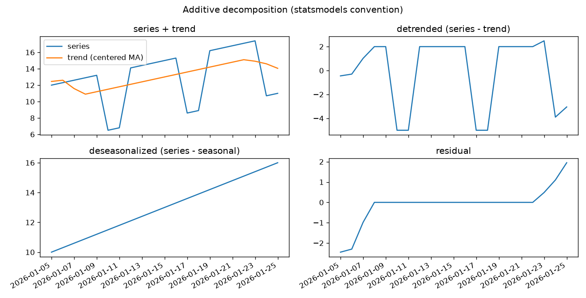

Consolidated Flagship Guide
This topic is now part of the comprehensive flagship guide: Data Ingestion, Missing Routing & Categorical Encoders.
Data Processing¶
The data & feature layer, one script at a time: ingest and missingness, the 18 encoders, grouped/trended/windowed features, the generator's ground truth, and the drop-and-warn NA behavior.
uv run python examples/data_layer_demo.py # default: churn
uv run python examples/data_layer_demo.py diamonds wine_quality
One script, real data, every detail printed. Below is the full output of the default run, step by step.
Step 1 — real dataset (churn, 5,000 × 20)¶
Column types and missingness first — n_missing and na_counts are shown by
default, never hidden. Then numeric summaries, category inference
(n_category: integral numerics with few distinct levels become categorical),
IndexMapper levels, and grouped transforms with an inverse roundtrip check.
==============================================================================
1. REAL DATASET: churn
==============================================================================
rows x cols : 5000 x 20
categorical columns: 5 -> state, area_code, international_plan, voice_mail_plan, CustomerChurned
numeric columns : 15 -> account_length, number_vmail_messages, total_day_minutes, total_day_calls, total_day_charge, total_eve_minutes, total_eve_calls, total_eve_charge …(+7)
missing (na_counts): none
numeric summaries (count, n_missing, mean, std, min, q1, median, q3, max):
account_length 5000 0 100.3 39.69 1 73 100 127 243
number_vmail_messages 5000 0 7.755 13.55 0 0 0 17 52
total_day_minutes 5000 0 180.3 53.89 0 143.7 180.1 216.2 351.5
total_day_calls 5000 0 100 19.83 0 87 100 113 165
DatasetBuilder(n_category=5% of rows): integral numerics promoted to categorical: ['account_length', 'number_customer_service_calls', 'number_vmail_messages', 'total_day_calls', 'total_eve_calls', 'total_intl_calls', 'total_night_calls']
na_counts after ingest: none
IndexMapper[state]: 51 levels; sample: 3->0, 23->1, 36->2, 37->3, 11->4
group mean of account_length by state (first 5): ['103.8', '101.7', '104', '101.3', '101.8']
group zscore of account_length by state (first 5): ['-0.9772', '-1.192', '1.196', '1.335', '-0.06307']
zscore -> inverse roundtrip ok : True
Step 2 — synthetic generator with ground truth¶
20,000 rows with known structure: the realized variance share of each component is the answer key for structure-recovery experiments.
==============================================================================
2. SYNTHETIC GENERATOR WITH GROUND TRUTH
==============================================================================
rows: 20000, columns: 8
realized variance share of each component:
numeric 0.841
categorical 0.137
hierarchy 0.364
interaction 0.031
noise 0.017
(total var) 2.400
cat_0 true level effects (first 4): [1.219, 0.186, 0.252, 0.098]

rendered by mltreelib.plots.plot_variance_shares (the same figure the
generator's truth["variance"] feeds).
Step 3 — time features and missing-data behavior¶
A synthetic two-store panel: calendar parts, day lags, trended and windowed
aggregations, and the additive decomposition — residuals sit at machine zero on
this clean panel. The last block feeds an incomplete row deliberately: it is
dropped from estimation with a UserWarning, and its output is missing.
==============================================================================
3. TIME FEATURES ON A SYNTHETIC PANEL (NA handling included)
==============================================================================
dates : 2026-01-05 .. 2026-01-25 (2 stores x 21 days)
weekday : ['0', '1', '2', '3', '4', '5', '6']
weekend : ['0', '0', '0', '0', '0', '1', '1']
season : ['3', '3', '3', '3', '3', '3', '3']
lag 7 days (first 8) : ['-', '-', '-', '-', '-', '-', '-', '12']
year_month mean (first 5) : ['13', '13', '13', '13', '13']
7-day trailing sum (first 10) : ['12', '24.3', '36.9', '49.8', '63', '69.5', '76.3', '78.4', '80.5', '82.6']
decomposition (store_a, rows 5..12):
value detrend deseason residual
6.50 -5 11.5 0
6.80 -5 11.8 0
14.10 2 12.1 8.882e-16
14.40 2 12.4 0
14.70 2 12.7 0
15.00 2 13 -4.441e-16
15.30 2 13.3 0
8.60 -5 13.6 0
NA handling (drop + warn):
warning: lag_by_days: 1 rows with missing key/date/value dropped from estimation; outputs left as missing
output : [None, None, None, None] (incomplete rows -> missing)
figure: examples/out/variance_shares.png
figure: examples/out/decomposition.png
==============================================================================
DONE — details printed above cover ingest, missingness, encodings, grouped/trended/windowed/decomposed features and ground truth
==============================================================================

Figures are rendered when matplotlib and seaborn are installed (dev extras;
the library itself does not depend on them).